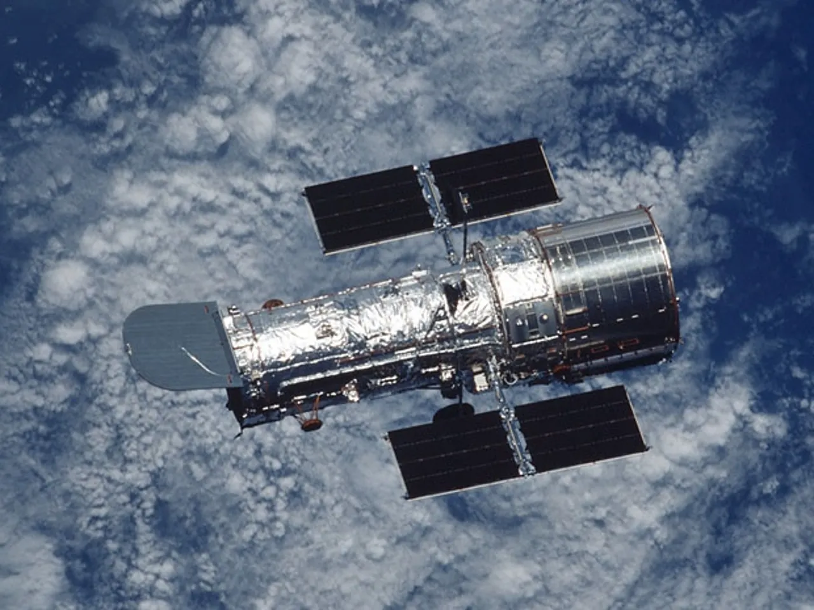

Inception and Collaboration
Major Achievements
Scientific Missions
International Collaboration
|

|
|  | Future Initiatives
|
Culmination:
|

|
"Exploring the Cosmos: A Journey with ESA's Space Vehicles"
"Embark on a celestial voyage with the European Space Agency (ESA), where cutting-edge technology meets the vast expanse of the cosmos.
ESA's fleet of space vehicles represents the pinnacle of scientific innovation, enabling us to delve into the mysteries of our universe.
From launching satellites to probing distant planets, each mission is a testament to ESA's commitment to advancing space exploration.
Join us as we unravel the secrets of the cosmos through the lens of these remarkable space vehicles, pushing the boundaries of human
knowledge and reaching for the stars."
Ariane Family - Pioneering Space TransportationThe Ariane family of launch vehicles, pioneered by ESA, stands as a cornerstone in space transportation. Renowned for their reliability, Ariane rockets have been instrumental in deploying a myriad of payloads into orbit, from communication satellites to interplanetary probes. With a legacy dating back to the late 1970s, the Ariane programme continues to be a driving force in ESA's mission to explore the cosmos. |

|
Vega - Precision in Small Payload LaunchesVega, the versatile light-lift launcher developed by ESA, excels in delivering small to medium-sized payloads with unparalleled precision. Designed for a wide range of missions, including scientific research and Earth observation, Vega showcases ESA's commitment to meeting the diverse demands of space exploration with finesse. |
|
Soyuz at Guiana Space Centre - A Historic CollaborationESA's collaboration with the Russian space agency, Roscosmos, brings the renowned Soyuz launcher to the Guiana Space Centre. This historic partnership allows ESA to leverage the robust and proven Soyuz vehicle for a variety of missions, showcasing the power of international cooperation in the realm of space exploration. |

|